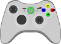

 Userspace Xbox/Xbox360 USB Gamepad Driver for Linux
This is a Xbox/Xbox360 gamepad driver for Linux that works
in userspace. It is an alternative to the xpad kernel driver
and has support for Xbox1 gamepads, Xbox360 USB gamepads and
Xbox360 wireless gamepads, both first and third party. The
Xbox360 guitar and some Xbox1 dancemats might work too. The
Xbox 360 racing wheel is not supported, but shouldn't be to
hard to add if somebody is interested.
Note that using a wireless Xbox360 controller with the
Play&Charge USB cable will not work. The cable
is for recharging only and does not transmit any input data
over the wire. To use the wireless Xbox360 controller you
need the wireless receiver.
In addition to all the Xbox related stuff, the driver also
has native support for the Thrustmaster Dual Power 3
gamepad, including rumble and can be used on top of the
regular Linux joystick driver.
Unlike the stock xpad kernel driver, xboxdrv provides a wide
varity of configuration options, it allows you to simulate
keyboard and mouse events, remap buttons and axes, apply
autofire, invert axis, tweak axis sensitivity, emulate
throttle and rudder controls and send macros.
You can find a full list of possible options in the xboxdrv manpage.
News
0.7.3 released
fixed installation of xboxdrvctl
added special REL repeat value '-1' to avoid jaggy mouse emulation movement
added "rel-repeat:" axis-event for better scroll wheel emulation
added --no-dbus, to disable D-Bus support
added xbmc.xboxdrv, a config fine tuned for XBMC
added zsnes.xboxdrv, a config file for ZSNES
reenabled USBReadThread to work around ignored input events
'--daemon' is broken in this release
This release should fix the issue with buttons getting
stuck and events getting lost of previous 0.7.x releases
and bring it on par with 0.6.6, '--daemon' mode however
is now broken and will require a larger code
restructuring to get fixed.
Bugs in 0.7.0, 0.7.1, 0.7.2
The current 0.7.x xboxdrv releases have issues with
input events getting lost, resulting in stuck buttons
and other problems. For the time being it is recommended
to stick with the 0.6.6 release.
0.7.2 released
added --mimic-xpad-wireless
added --device-usbid and --device-usbids
added D-Bus support to the daemon
added better handling of rounding errors when sending REL_
added dpad-restrictor for X, Y or fourway restriction on the dpad
added statistic modifier that counts how often buttons are pressed
added support for multiple wireless controller in daemon
added --priority to enable realtime scheduling priority
added custom configuration for XBMC, see examples/xbmc.xboxdrv
changed default timeout to 10msec, for more responsive mouse emulation
changed meaning of -m, its now a shortcut for --modifier, not --mouse
improved INIParser, can now handle KEY_#NUM style names without quotes
improved mouse emulation
removed obsolete xboxdrv-daemon script
renamed --device-name to --device-names
renamed --name to --device-name
0.7.1 released
added --match-group
added --on-connect and --on-disconnect to xboxdrv --daemon
added --usb-debug
added --no-extra-events
added support for Playstation button names (triangle, circle, square, cross, L1, L2, L3, R1, R2, R3)
added ability to set LED per controller slot
added [controller0/config0/modifier] style sections to the ini file
added new match rules: usbserial=SERIAL, vendor=VENDOR, product=PRODUCT and property=PROPERTY:VALUE
added some example configurations to examples/
fixed issues with older libudev versions
fixed LED not getting switched off on shutdown
fixed some missing #include directives
fixed axis inversion issue in --axismap
fixed assertion in relative axis filter
fixed --dpad-as-button
fixed --dpad-only
fixed --mimic-xpad
fixed issue with using --trigger-as-zaxis in combination with axisfilter
man-page updates and cleanup
new version of runxboxdrv
0.7.0 released
switched to libusb-1.0
-D, --daemon replaces xboxdrv-daemon
--daemon supports hotpluging via libudev, even in applications that don't support it themselves
cleaned up axis/button modifier some more
startup output got cleaned up
fixed double Ctrl-c issue
added --modifier MODIFIER,...
configuration toggle button now works with modifiers too
renamed --ui-new to --next-config
renamed --ui-toggle to --toggle
fixed incorrect endpoint detection for Xbox1 controller
native Playstation 3 USB controller support
added axis rotation modifier
renamed A, B, X, Y axis to BTN_A, BTN_B, BTN_X, BTN_Y to avoid confusion with X1, Y1
added --list-all, --list-key, -list-rel, ... to display all available symbolic name
changed device_id syntax from 1-BTN_A to now BTN_A@1
0.6.6 released
fixed incorrect deadzone handling
0.6.5 released
fixed incorrect variable initalisation, leading to button presses getting lost sometimes
fixed initialisation issue for Chatpad connected to controllers with bcdDevice 0x0114
libusb-1.0 switch
The development version of
git (aka the 0.7.0 release) switched
to libusb-1.0,
as this is a rather large change, there might be new
bugs. Testers are welcome to give it a try.
0.6.4 released
fixed bug that disabled all axis when a button was pressed
fixed some missing include
0.6.4 released
fixed bug that disabled all axis when a button was pressed
fixed some missing include
0.6.3 released
chatpad support (still rough), special thanks to Jani Virta, Andy Kirkham, dwomac and GAFBlizzard who helped make it possible
added --chatpad, --chatpad-no-init and --chatpad-debug
added --headset, --headset-dump FILE and --headset-play FILE, for experimentation only
added optional abs:/rel:/key: prefixes to --ui-axismap
added input filters for --axismap and --buttonmap
fixed multiple bugs that made it impossible to assign events to specific devices
fixed axis getting stuck when using a shift key
fixed incorrect error handling on fork()/exec()
0.6.2 released
merged Xbox360 guitar handling into the regular Xbox360 controller handling, use --guitar to get the old mapping back
added generic event filter framework
added toggle button filter
added invert button filter
added auto fire button filter
added log filter for button and axis
added invert axis filter
added sensitivity axis filter
added relative axis filter
added response curve axis filter
added deadzone axis filter
added calibration axis filter
added ability to send different events depending on how long a button was pressed
added ability to launch a program on button press
added ability to replay a macro on a button press
added ability to launch a child program from within xboxdrv, making wrapper scripts easier to write without race conditions
added --option NAME=VALUE to allow INI-style config options from command line
added --evdev-debug to print out all received events from evdev
added --evdev-no-grab to avoid a full grab on the event device
unified ini and command line parsing some more
Mad Catz Xbox controller - MW2 controller support added
added support for Xbox1 analog buttons, use --ui-axismap with A, B, X, Y, black, white
give proper error message when the Play&Charge kit is used
0.6.1 released
fixed bug in axis to key mapping
removed debugging output
0.6.0 released
support for reading from evdev, this allows the use of regular regular PC joysticks or the Playstation 3 controllers with xboxdrv, useful if you need configurability or joy2key-like functionality, but don't have a Xbox360 gamepad
added KEY_#num, ABS_#num and REL_#num to allow refering to events by number instead of name
support for reading configuration from a INI configuration file
cleaned up uinput mapping, --dpad-as-button, --dpad-only, etc. are now simple mappings instead of special case hackery
--ui-axismap and --ui-buttonmap now work with all axis and button
smooth deadzone handling without jumps
added --detach-kernel-driver
automatically insert dummy events to make input device register as joystick
added ability to have multiple configs running at the same time with --ui-new
added shifting to --ui-axismap, allows sending of different events when a shift button is pressed
Saitek Cyborg Rumble Pad support added
Gamestop Xbox 360 Controller support added
0.5.0 released
added device_id handling to --ui-buttonmap and --ui-axismap, allows the creation of multiple input devices from a single controller
added shifting to --ui-buttonmap, allows sending of different events when a shift button is pressed
added support to send keyboard combination from --ui-buttonmap
added --mouse, a simple shortcut to enable mouse emulation
added dummy events to the mouse device to let it register properly by the kernel without messing with hal
auto-detect USB endpoints on Xbox1 controller
0.4.13 released
added --mimic-xpad
added --no-extra-devices
0.4.12 released
added --four-way-restrictor
added --dpad-rotation
added proper man pages for xboxdrv and xboxdrv-daemon
0.4.11 released
added --axis-sensitivity
added number aliases for button names
added left/right/up/down aliases for dpad
some compiler warnings got cleaned up
confusing uinput error messages got cleaned up
fixed missing 'report sync' event that broke keyboard emulation
0.4.10 released
fixed mouse emulation a bit, still somewhat broken
Mad Catz Xbox 360 controller support
Harmonix controller support
minor compile fix (missing string.h)
0.4.9 released
Saitek P2500 support (no rumble, untested)
Hori Real Arcade Pro Ex support
changes in the thread handling to reduce latency
include fixes for g++-4.4
0.4.8 released
usb reading in separate thread, should fix missed events and stuck buttons
some SCons configuration magic for better compatibility
0.4.7 released
support for Pelican TSZ360 pad
support for Saitek P3200 pad
support for Thrustmaster Firestorm Dual Power (044f:b312)
deadzone support for trigger via --deadzone-trigger NUM
some documentation improvements
0.4.6 released
--calibration MIN,CENTER,MAX option to workaround broken controller
xboxdrv-daemon.py to launch xboxdrv automatically when device gets plugged in
0.4.5 released
fixed mixup between strong and weak rumble
added Harmonix Drum Kit for Xbox 360 support
added Logitech Chillstream support
added evsend tool to send events to /dev/input/eventX
Y-Axis for Firestorm gamepad fixed
0.4.4 released
auto-detect USB endpoints
rumble support, enabled via --force-feedback
added --rumble-gain to control rumble strength
--deadzone accepts values in percentage
DDR Universe 2 Mat added
0.4.3 released
added support for X11 keysym in --ui-buttonmap
added --ui-clear and void mappings to unmap buttons and axis
fixed LED handling for wireless gamepads
Thrustmaster Firestorm Dual Power support
added --name option to set device name
added JS_${NUM} name to address joystick buttons by number instead of name
fixed issue with multiple wireless controller
some preparation for rumble (prints FF events)
0.4.2 released
fixes broken --dpad-only option
0.4.1 released
fixes little compile problem with KEY_MEDIA_REPEAT, nothing more
0.4 released
autofire, throttle, mouse and keyboard emulation added
0.3 released
mostly smaller bugfixes
Chatpad Development
Some chatpad development is in progress, discussion at here
runs in userspace on top
of libusb-1.0, no kernel
recompile required, very easy to build
gives you what you would expect from a driver, like a
normal joystick device and a event device, works in all
games in which a kernel driver would work
allows you to handle analog-triggers as a single z-axis,
as buttons or as seperate axes
allows to handle the directional pad as buttons or as axis
allows to set the LED status of the Xbox360 gamepad
supports multiple gamepads, either by starting multiple
instances of the driver or using daemon mode
allows to remap buttons and axes
allows to transform events to allow things such as
autofire, deadzones, axis inversion, axis sensitivity
changes, throttle emulation, etc.
supports macro programming
allows launching applications on a button press
Supported and tested devices
Xbox1 controller, both official and third party
Xbox360 USB controller
Xbox360 wireless controller via the USB wireless receiver
Xbox360 USB guitar and drum kit
Thrustmaster Dual Power 3 Gamepad
any joystick support by Linux via the evdev interface
How to help
Two things are currently not working, the headset and the
racing wheel. With the headset it is relativly easy to
capture and play sound, but the exact sound format is
unknown (best guess so far some form of non-linear 4bit
PCM, Mono, 16000Hz):
The racing wheel support should be doable if somebody wants to
spend some time on it, according to first reports the device
sends out events, so those just need to be deciphered. It is
also supported by the Windows driver, so capturing the
communication is possible.
Documentation
Xboxdrv provides extensive documentation in the form of man-pages:
Prebuild official binary packages are available for Ubuntu
10.10 and Ubuntu 10.04 LTS can be obtained from
the PPA.
To automatically add the repository to
the sources.list and install xboxdrv
use:
Note that there are two xboxdrv packages in the
repository, the xboxdrv package is the latest
version, with the most features, but also potentially bugs
and issues. The xboxdrv-stable package is simply
an older version of xboxdrv for which no critical bugs are
know.
That repository also contains sdl-jstest, which
you might want to grab for debugging purposes with SDL
applications.
Donate
Like Xboxdrv and want to give something back? You can do so via three ways: